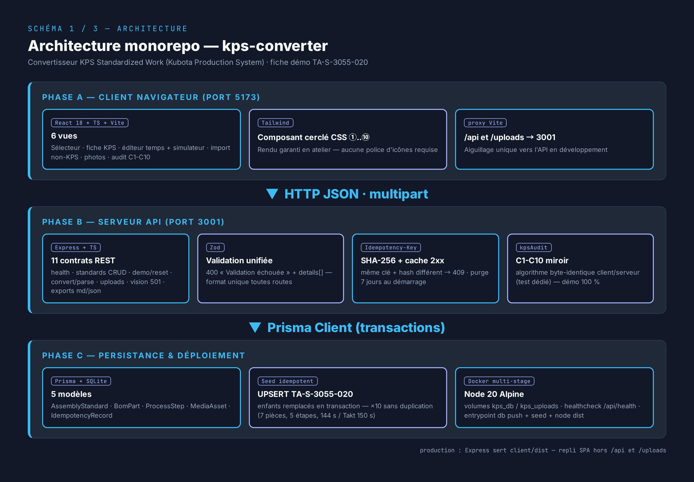
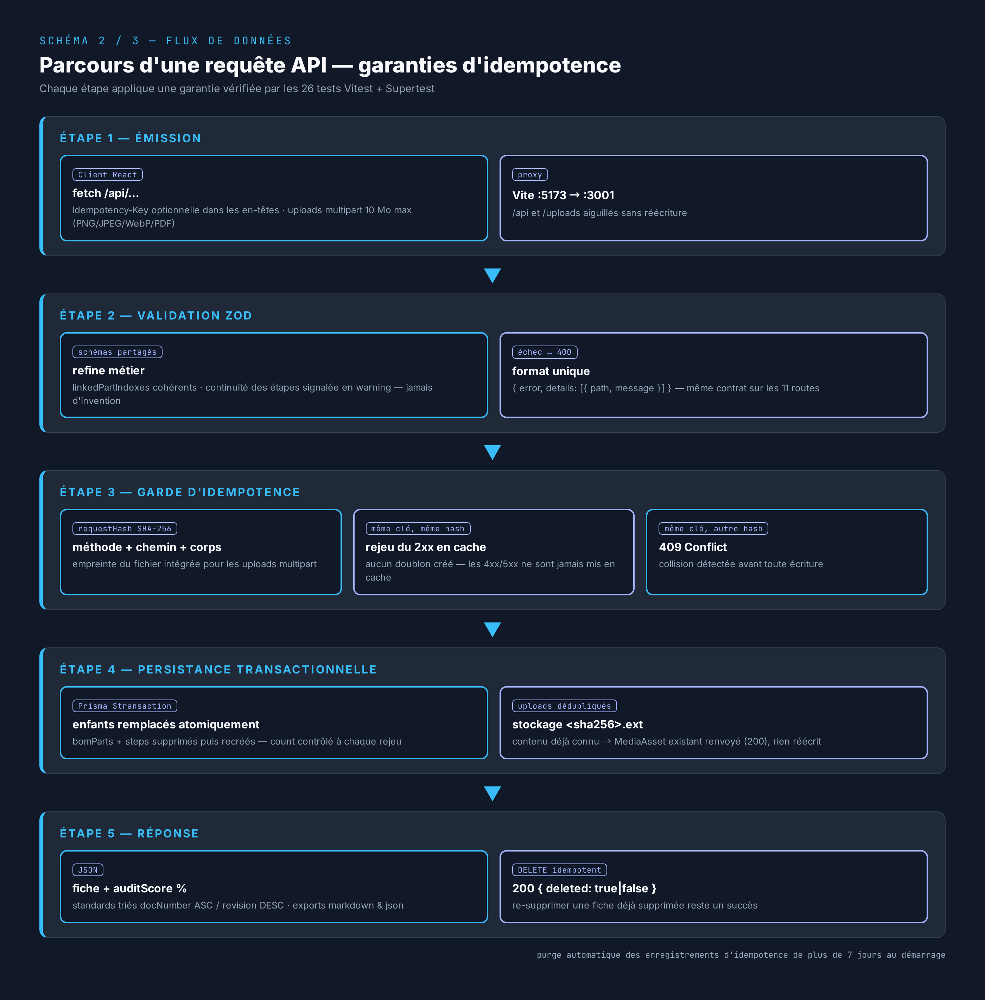
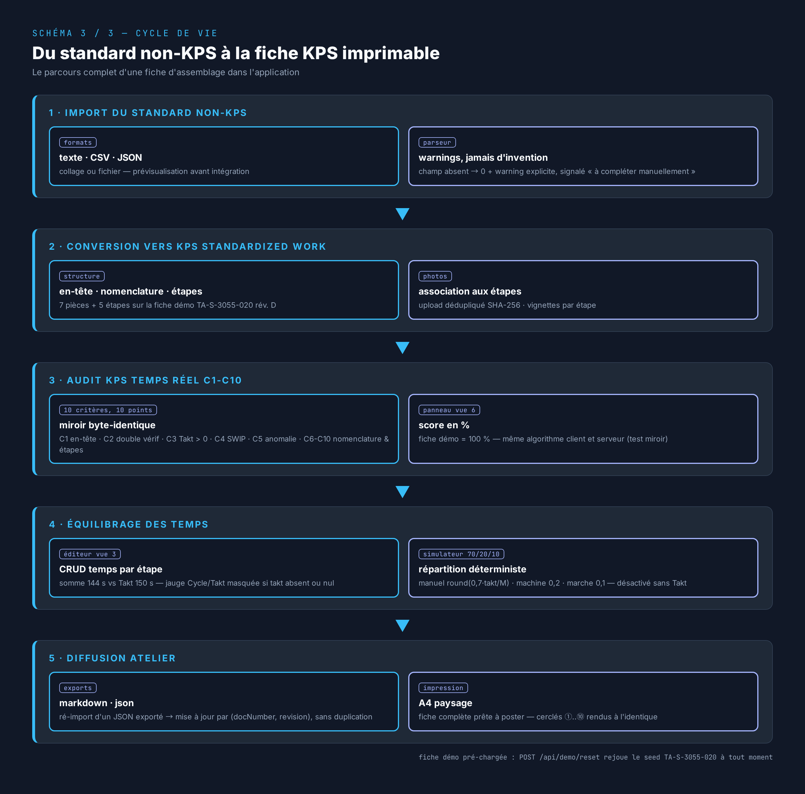

Partie 1
Mission et architecture du monorepo
Une seule application web sert deux mondes : la fiche atelier papier (format MO-MF-013-F) en entrée, la fiche KPS Standardized Work en sortie.
La mission
Le KPS Converter est une application web full-stack idempotente et conteneurisable qui convertit les standards d'assemblage mécanique rédigés au format fiche atelier (document source MO-MF-013-F, archivé en photos réelles) vers la structure KPS Standardized Work du Kubota Production System. La fiche de démonstration TA-S-3055-020 « Sous assemblage du tank fuel » (rév. D) est pré-chargée : 7 pièces de nomenclature, 5 étapes opératoires, somme des temps de 144 secondes face à un Takt de 150 secondes. Le document source papier reste la référence : l'application ne recopie que ce qui est lisible, et signale le reste plutôt que d'inventer.
L'architecture est un monorepo à deux paquets : un client React 18 + TypeScript + Vite (port 5173) et un serveur Node.js + Express + TypeScript + Zod + Prisma + SQLite (port 3001). En développement, le proxy Vite aiguille /api et /uploads vers le serveur ; en production, le même serveur Express sert le client compilé avec repli SPA, ce qui réduit le déploiement à un seul conteneur et un seul port.

Les six vues du client
Le client organise tout le travail opératoire en six vues : le sélecteur de fiches avec reset démo, la fiche KPS complète imprimable en A4 paysage, l'éditeur de temps avec simulateur, l'import non-KPS avec prévisualisation, la gestion des photos par étape, et le panneau d'audit C1-C10 temps réel. Un composant CSS dédié dessine les numéros cerclés ①..⑩ sans aucune police d'icônes : le rendu à l'impression atelier est garanti identique quel que soit le poste.
La pile technique en un coup d'œil
| Couche | Technologie | Rôle précis |
|---|---|---|
| client/ | React 18 · TypeScript · Vite · Tailwind | six vues, éditeur, audit client, impression A4 paysage |
| server/ | Node.js · Express · TypeScript · Zod | onze contrats REST, validation, erreurs unifiées |
| server/prisma | Prisma ORM · SQLite | cinq modèles, transactions atomiques sur les enfants |
| racine | concurrently + tsx | un seul npm run dev pour API + client |
| conteneur | Docker multi-stage · Node 20 Alpine | build client, prisma generate, npm ci --omit=dev, entrypoint LF |
| qualité | Vitest · Supertest · miroir kpsAudit | 26 tests, algorithme d'audit identique client/serveur |
La contrainte SQLite est assumée dès la conception : la base embarquée ne connaît pas les listes natives, la nomenclature et les étapes sont donc modélisées en tables enfants liées, sérialisées côté API quand un contrat l'exige. Ce choix garde le déploiement atelier trivial — un fichier de base, deux volumes Docker, aucun serveur de base de données à administrer — tout en conservant l'intégrité transactionnelle là où elle compte : le remplacement complet d'une fiche.
Partie 2
Contrats API et garanties d'idempotence
Onze routes REST, un format d'erreur unique, et une règle transversale : rejouer une opération ne duplique jamais rien.
Les 11 contrats REST
| Route | Rôle | Garantie |
|---|---|---|
| GET /api/health | Sonde de vie | 503 explicite si la base est inaccessible |
| GET /api/standards | Liste des fiches | tri docNumber/revision, score d'audit en % |
| GET /api/standards/:id | Fiche complète | enfants triés, index liés désérialisés |
| POST /api/standards | Création | 409 + existingId si (docNumber, revision) existe |
| PUT /api/standards/:id | Remplacement complet | enfants remplacés en transaction |
| DELETE /api/standards/:id | Suppression | idempotent : { deleted: true | false } |
| POST /api/demo/reset | Reset démo | rejoue le seed TA-S-3055-020 |
| POST /api/convert/parse | Analyse non-KPS | texte/CSV/JSON + warnings, jamais d'invention |
| POST /api/uploads | Photos/PDF | 10 Mo max, dédupliqué par SHA-256 du contenu |
| POST /api/vision/extract | Extraction vision | 501 explicite tant que la clé vision n'est pas câblée |
| GET …/export/markdown|json | Exports | téléchargement re-importable sans duplication |
Tout échec de validation Zod renvoie le même contrat sur les onze routes : 400 { error, details: [{ path, message }] }. Le client affiche donc les erreurs de champ sans logique spécifique par route, et les tests vérifient ce format une fois pour toutes.

Les quatre règles d'idempotence
[OK]
Base et seed — UPSERT déterministe sur (docNumber, revision) ; les enfants sont supprimés puis recréés dans la même transaction Prisma. Relancer dix fois ne duplique jamais la fiche démo (count contrôlé = 1).
[OK]
API — l'empreinte requestHash = SHA-256 de méthode + chemin + corps (empreinte du fichier incluse pour les uploads). Même clé et même hash : rejeu de la réponse 2xx en cache. Même clé et hash différent : 409 avant toute écriture. Les 4xx/5xx ne sont jamais mis en cache, et la purge des enregistrements de plus de 7 jours s'exécute au démarrage.
[OK]
Uploads — le fichier est stocké sous <sha256>.extension, jamais sous son nom d'origine ; un contenu déjà connu renvoie le MediaAsset existant sans réécrire sur disque.
[OK]
Import/export — ré-importer un JSON exporté met la fiche à jour via (docNumber, revision) : zéro pièce ou étape dupliquée.
Un échange idempotent, pas à pas
# 1er appel — création effective POST /api/standards Idempotency-Key: recap-2026-11-27-a → 201 Created { id, docNumber: "TA-S-3055-021", revision: "A", … } # réseau interrompu, le client rejoue la même requête POST /api/standards Idempotency-Key: recap-2026-11-27-a (même corps) → 200 (même réponse servie depuis le cache — aucun second enregistrement) # même clé, mais corps différent : collision détectée avant écriture POST /api/standards Idempotency-Key: recap-2026-11-27-a (autre corps) → 409 Conflict { existingId }
Ce scénario — exactement celui que rejouent les tests — résume la promesse de l'application face à un réseau d'atelier imparfait : le même envoi répété ne crée jamais de doublon, et un envoi contradictoire est refusé au lieu d'écraser silencieusement une donnée. La même discipline s'applique aux suppressions (re-supprimer renvoie deleted:false sans erreur) et aux uploads (un fichier déjà connu renvoie l'asset existant sans réécriture disque).
Partie 3
Cycle de vie d'une fiche et garanties qualité
De la fiche papier scannée à la fiche KPS imprimable : importer, convertir, auditer, équilibrer, diffuser.

Audit KPS C1-C10 : un algorithme, deux copies identiques
Dix critères valent dix points : C1 en-tête complet, C2 double vérification, C3 Takt positif, C4 SWIP au moins égal à un, C5 règle d'anomalie, C6 nomenclature (index uniques, références non vides, quantités positives), C7 étapes aux ordres uniques, C8 somme de temps positive par étape, C9 point clé et raison présents, C10 contrôle défini. Le fichier serveur kpsAudit.ts et son miroir client sont identiques byte à byte, garantie par un test dédié : le score affiché en temps réel dans le panneau d'audit est donc exactement celui que recalculerait le serveur. La fiche démo atteint 100 %.
Le simulateur de temps est volontairement déterministe : pour M étapes et un Takt défini, manuel = round(0,7 × takt / M), machine = round(0,2 × takt / M), marche = round(0,1 × takt / M). Si le Takt est absent ou nul, le bouton est désactivé et affiche la consigne « Définir le Takt Time avant de simuler » — la jauge Cycle/Takt est masquée dans le même cas, ce qui évite tout indicateur trompeur.
Choix assumés — jamais d'invention
Les temps absents du document source restent à 0 avec un warning visible et la mention « à compléter manuellement » ; les hypothèses de la fiche démo sont documentées « à valider par Méthodes » partout (code, README, rapport). L'extraction vision renvoie un 501 explicite tant qu'aucun fournisseur n'est câblé : l'application ne simule jamais une capacité qu'elle n'a pas.
Les dix critères d'audit, critère par critère
| # | Critère | Exigence |
|---|---|---|
| C1 | En-tête complet | docNumber, révision, titre — rien de manquant |
| C2 | Double vérification | champ préparé/vérifié présent |
| C3 | Takt time | strictement positif |
| C4 | SWIP | au moins égal à 1 |
| C5 | Règle d'anomalie | consigne d'arrêt définie |
| C6 | Nomenclature | index uniques ≥ 1, références non vides, quantités ≥ 1 |
| C7 | Étapes | ordres uniques ≥ 1 |
| C8 | Temps par étape | somme de temps strictement positive |
| C9 | Point clé & raison | présents sur chaque étape |
| C10 | Contrôle | moyen de contrôle défini sur chaque étape |
Le panneau d'audit (vue 6) calcule ce score à chaque frappe : la fiche démo affiche 100 % en permanence, et toute édition qui ferait chuter un critère est visible instantanément, côté client comme côté serveur. C'est cette immédiateté qui fait de l'audit un outil de saisie, pas un contrôle a posteriori : l'opérateur corrige pendant qu'il complète, pas après export.
Partie 4
Déploiement atelier et preuves de vérification
Un conteneur, un port, des volumes persistants — et une checklist dont chaque succès est prouvé par une sortie de commande.
Démarrage
# développement local — API :3001 + client Vite :5173 npm install && npm install --prefix client && npm install --prefix server cd server && npx prisma db push && npx tsx src/seed.ts && cd .. npm run dev # serveur d'atelier (production) docker compose up -d --build # → http://serveur:3001
Le Dockerfile multi-stage (Node 20 Alpine) compile le client, génère le client Prisma, puis l'entrypoint pousse le schéma, rejoue le seed et démarre Express. Deux volumes nommés (kps_db et kps_uploads) persistent les données et les médias, et un healthcheck HTTP interroge /api/health toutes les 30 secondes.
26/26
tests Vitest + Supertest — dont les 7 exigés (409, cache 2xx, SHA-256, re-DELETE, double seed…)
11/11
scénarios navigateur vérifiés (audit 100 %, import + 409, impression A4, 0 erreur console)
15/15
contrôles Docker en vérification manuelle mécanisée (compose, Dockerfile, entrypoint LF)
100 %
score d'audit C1-C10 de la fiche démo TA-S-3055-020 (miroir byte-identique)
Checklist §8 — résultats prouvés
[OK]
8.1-8.2 Installations et base — trois installs distinctes, prisma db push, seed exécuté deux fois : même id, count = 1 à chaque rejeu (7 pièces, 5 étapes, 144 s / Takt 150 s).
[OK]
8.3-8.4 Compilation — tsc --noEmit zéro erreur côté client et serveur ; build Vite OK (188 Ko de JS), server/dist/seed.js présent pour le mode conteneur.
[OK]
8.5 Tests — 26/26 : parseur texte + CSV, SHA-256 d'upload, double POST même clé (201 puis cache), même clé + payload différent (409), re-DELETE (deleted:false), double seed, audit démo à 100 %, miroir kpsAudit, PUT transactionnel, format d'erreur Zod, vision 501, health, exports.
[OK]
8.6 Docker — binaire absent du sandbox de génération : vérification manuelle mécanisée 15/15 (ports, restart, DATABASE_URL absolu, volumes, healthcheck 30s/5s/3, entrypoint verbatim LF, multi-stage). À valider sur poste équipé à l'installation atelier.
[OK]
8.7 Rapport — chaque échec rencontré en cours de route (client Prisma non généré, 2 erreurs de typage, fixture CSV décalée, PORT YAML) est documenté cause → correctif → rejeu. Aucun succès déclaré sans preuve.
Les scénarios navigateur vérifiés (11/11)
La vérification en navigateur réel a couvert onze scénarios de bout en bout, dont notamment : l'affichage de la fiche démo TA-S-3055-020 avec son audit à 100 %, la jauge Cycle/Takt à 96 % (144 s sur 150 s), le simulateur de temps (répartition 21/6/3 sur la fiche démo), l'import d'un standard avec erreur 409 gérée proprement côté interface, le reset de la fiche démo, l'impression A4 paysage avec navigation masquée — le tout sans une seule erreur console. Ce parcours confirme que l'expérience opératoire promise par l'architecture tient réellement debout à l'écran, et pas seulement dans les tests d'API.
Pour installer et utiliser l'application, le README du dépôt reprend l'intégralité de ces étapes : démarrage local en deux terminaux (ou une seule commande npm run dev), préparation idempotente de la base et de la fiche démo, puis déploiement Docker pour le serveur d'atelier. Les choix assumés et les limites documentées (vision 501, vérification Docker à rejouer sur poste équipé) y sont rappelés pour que chaque utilisateur sache exactement ce que l'application garantit — et ce qu'elle refuse de prétendre.
Où trouver quoi dans le dépôt
| Chemin | Contenu |
|---|---|
| README.md | démarrage, architecture, contrats API, choix assumés |
| Dockerfile + docker-compose.yml | image multi-stage Node 20 Alpine, volumes kps_db / kps_uploads, healthcheck |
| client/src/components/ | les six vues (VueKps, EditeurTemps, ImportNonKps, PhotosVignettes, PanneauAudit…) et le composant cerclé ①..⑩ |
| client/src/lib/kpsAudit.ts | miroir client de l'algorithme C1-C10 (testé byte-identique au serveur) |
| server/src/ | routes, validation Zod, idempotence, parseur de conversion, audit, seed, exports |
| server/prisma/ | schéma des 5 modèles + base SQLite générée par db push |
| docs/source/ | photos du document papier source MO-MF-013-F (référence de la fiche démo) |
| server/src/__tests__/ | les 26 tests Vitest + Supertest, dont le test miroir kpsAudit |